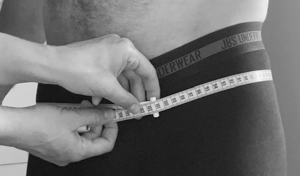

2 Testmanual
2.1 Blodtryk
Første måling er blodtryksmåling, da borger skal være så afslappet som muligt.
2.1.1 Formål
Monitorering af blodtryk.
2.1.2 Teori
Blodtrykket måles i enheden millimeter kviksølv og består af det diastoliske og systoliske tryk. Det systoliske tryk (slagtrykket) er det maksimale tryk, der er i en pulsåre, lige idet hjertet trækker sig sammen og presser blodet ud i pulsårerne. Det diastoliske tryk (hviletrykket) er det laveste tryk, som blodet udøver på pulsårens væg, når hjertet slapper af mellem to slag og blodet strømmer frit.
2.1.3 Referenceramme
BT under 140/90 Puls 50-80 Hvis borger har en kronisk sygdom ex. diabetes, hjertesygdom, nyresygdom skal blodtrykket være under 130/80
2.1.4 Målingen
2.1.4.1 Forberedelse
- Mål omkreds på overarmen, ca. 8-10 cm fra albuebøjningen, for at sikre korrekt brug af manchetstørrelse.
- Lad borgeren hvilke i minimum 5 minutter inden målingen påbegyndes.
- Sørg for at borgeren sidder godt på en stol med overarmen afslappet og blottet.
- Begge fødder skal hvile i gulvet og benene må IKKE være krydsede. Ryggen skal hvile mod ryglænet. Borgeren må IKKE rejse sig inden for de 5 min. Ej heller mellem målingerne, da dette kan øge blodtrykket.
- Lad borgerens HØJRE arm ligge i korrekt stilling med håndfladen opad. Overarmen skal ligge så manchetten placeres i hjertehøjde.
2.1.4.2 Placering af manchetten
- Manchetten placeres på armen.
- Udfør håndhygiejne.
- Undgå at tøjet strammer omkring armen.
- Placer manchetten omkring armen ca. 2 cm. over albuebøjningen.
- Placer midten af manchetten over a.brachialis og stram den til, så den sidder tæt og glat på overarmen uden at give stase. (se billede)
2.1.4.3 Start blodtryksmåling
- Tryk på START.
- Armen skal holdes i ro og borger må ikke tale under eller mellem målingerne.
2.1.4.4 Gentag måling
- Målingen gentages efter 1 minut.
- Der måles en 3.gang hvis de to foregående målinger er forhøjet i forhold til referencerammen (140/90).
2.1.4.5 Efterarbejde
- Tag manchetten af.
- Rengør manchet og blodtryksapparat i henhold til producentens anbefalinger.
- Udfør håndhygiejne
2.1.5 Handlinger
- Hvis blodtrykket er over 200/120 skal målingen gentages efter en pause på ca. et kvarter og evt. i den anden arm. Hvis blodtrykket stadig er højt kontaktes borgerens egen læge eller vagtlæge (tlf.70 11 31 31) uden for lægens åbningstid. Der vurderes herefter i det enkelte tilfælde om borgeren skal fortsætte eller ej. Hvis lægen mener, borgeren skal komme til nærmere undersøgelse enten hos lægen eller lægevagt, spørges til, om det er forsvarligt, at borgeren kører i egen bil. Hvis ikke sættes borgeren i en taxa. Hvis lægen siger ok for, at borgeren kan fortsætte med undersøgelsen foretages de manglende målinger, undtaget funktionstest.
- Hvis blodtrykket er over 180/110 skal borgeren ikke lave funktionstest.
- Hvis BT er over 160/100 opfordres borgen til at tage telefonisk kontakt til egen læge samme dag for at aftale tid til en konsultation, hvor der kan foretages en re-måling.
- Hvis blodtrykket er <90/60 skal man være opmærksom på at borgeren ikke bliver svimmel
- Vær opmærksom, hvis borgeren har en meget høj hvilepuls (over 120 slag/min). Vurder om det er forsvarligt at lade borgeren udføre 6 min gangtest.
I tilfælde af at BT ligger meget over/under normalområdet, og borgeren ikke ønsker at kontakte egen læge, må dette respekteres
2.1.6 Rengøring
Manchetten rengøres en gang dagligt eller efter behov
2.1.7 Billede af blodtryksmåling
2.2 Fingerpriktest (Hba1c)
2.2.1 Formål
Bestemmelse af langtidsblodsukker
2.2.2 Teori
Ved bestemmelse af Hæmoglobin A1c fås et mål for en persons gennemsnitlige koncentration af glukose (sukker) i blodet i løbet af de sidste 2 til 3 måneder. HbA1c er under normale omstændigheder et godt mål for kvaliteten af blodsukkerets regulering de foregående 2 måneder. Prøven viser, hvor stor en del af den totale mængde hæmoglobin i blodet, der har sukker bundet til sig. Svaret afgives i mmol/mol.
2.2.3 Forberedelse
- Hvis I vælger at benytte handsker, benyt kun pudderfri handsker.
- Berøring af kassetten: Anvendes pudderfri handsker, må alle flader på kassetten berøres. Anvendes der ikke pudderfri handsker, må sugepunktet og de gennemsigtige flader på kassetten IKKE berøres.
- Optisk kontrol: En måling på den medfølgende optiske kontrolkassette bør udføres hver dag der testes borgere (Section 5.1).
- Sørg for at apparatet er tændt og klart.
- Bed borgeren om at vaske sine fingre grundigt.
- Sørg for at borgeren sidder med armen i nedadgående retning – kør evt. skrivebordet ned. Det kan være effektivt at lade borgeren svinge armen rundt et par gange, eller massere blodet mod fingeren.
- Åbn både lipid og hba1c kassetterne.
2.2.4 Foretag prøven
- Stik i fingeren, massér blidt fingeren for at få en stor bloddråbe frem.
2.2.5 Påføring af prøve og analyse
2.2.5.1 Fyld HbA1c-kassetten
- Anbring kassetten med den trykte side opad og sugepunktet over bloddråben.
- Påfør bloddråben, og hold øje med, at det markerede (blå) område er fyldt. Kontrollér prøvevolumen ved at vende kassetten om og se, om det område, der er markeret med blåt, er helt fyldt.
- Rør aldrig sugepunktet med fingeren.
- Luk kassetten, så kassetten klikker 2 gange.
- HbA1c kassetten lukkes og sættes i cobas b 101 instrumentet. Åbn låget ved at vælge Åbn på skærmen.
- Vend kassetten opad, og anbring den på rotoren i den hvide cirkel.
- Luk låget. Målingen starter automatisk og tager 5 min og 20 sek. for HbA1c.
- Når HbA1c-kassetten er færdiganalyseret, giver instrumentet en alarm. Resultatet fremkommer på skærmen, når alle resultater er færdige.
- Afslut målingen ved at vælge “flueben” på skærmen.
- Kassetterne kasseres i en kanyleboks
- Resultaterne fremkommer på skærmen
- Resultatet indtastes i REDcap
2.2.6 Prøvens holdbarhed i kassetten
- HbA1c: Når der er påført blod i kassetten, skal den indføres i instrumentet inden for 1 minut.
2.2.7 Billede af hba1c prøve

2.3 Hoftemål
2.3.1 Formål
At måle deltagerens hofteomfang
2.3.2 Eksklusionskriterier
- Vanskeligheder ved at stå oprejst
- Gravid (efter uge 29)
- Hvis borger ikke ønsker måling foretaget
Er hofteomfang større end målebånd noteres dette i bemærkningsfeltet i REDcap, sammen med målebåndets længde
2.3.3 Måleudstyr
- Ikke elastisk målebånd (200 til 225 cm.)
- Hvis muligt et spejl i kropshøjde og stol på hjul.
2.3.4 Målingen
- Målingen udføres, mens borgeren har undertøj på. Hvis borgeren foretrækker at beholde tøjet på, udføres målingen med tøjet på, og dette registreres.
- Hoftemålet foretages med deltageren stående med strakte, let spredte ben (fodafstand ca.20 cm.).
- Vægten skal være ligeligt fordelt på begge fødder og deltageren skal være afslappet.
- Armene skal hænge ned langs siden.
- Målebåndet placeres vandret på det bredeste sted omkring hofterne. Placeringen af det bredeste sted kan variere fra person til person og imellem mænd og kvinder. Undersøgeren, skal altid tjekke, at målebåndets placering på deltagerens ryg, er vandret.
- Målebåndet skal sidde tæt, men ikke stramme
- Deltageren står foran undersøgeren, som er siddende på en stol.
- Målingen udføres en gang og afrundes til nærmeste millimeter.
2.3.5 Billede af hoftemål

2.4 Taljemål
2.4.1 Formål
At måle borgers talje omfang. Taljemål bruges som en indikator for abdominal fedme og er associeret med type 2 diabetes.
2.4.2 Eksklusionskriterier
- Vanskeligheder ved at stå oprejst
- Gravid (efter uge 29)
- Stomi med pose, der sidder lige i taljemålet.
- Nyligt abdominal opereret eller andre problemer der forhindrer korrekt måling.
- Hvis borger ikke ønsker måling foretaget
- Hvis målingen ikke udføres noteres årsagen i REDcap
Er taljemålet større end målebånd noteres dette i bemærkningsfeltet i REDcap - sammen med målebåndets længde
2.4.3 Måleudstyr
- Ikke elastisk målebånd (200 til 225 cm.)
- Hvis muligt et spejl i kropshøjde og stol på hjul.
2.4.4 Målingen
- Målingen udføres, mens borgeren har undertøj på. Hvis borgeren foretrækker at beholde tøjet på, udføres målingen med tøjet på, og dette registreres.
- Taljemålet måles med deltageren stående med strakte, let spredte ben (fodafstand ca.20 cm.).
- Vægten skal være ligeligt fordelt på begge fødder og deltageren skal være afslappet.
- Armene skal hænge ned langs siden.
- Målebåndet placeres midt mellem nederste ribbenskurvatur og øverste hoftekant, crista iliaca. Der kan eventuelt bruges en tusch til at markere, hvor målebåndet skal placeres. Det kontrolleres, at målebåndet sidder ens i begge sider og er vandret. Målebåndet holdes tæt, men ikke stramt. Det skal være muligt at få en finger under målebåndet.
- Målingen udføres en gang ved ekspiration, og afrundes til nærmeste millimeter.
2.4.5 Talje/Hofte Ratio (THR)
- THR afspejler intraabdominal fedme.
- Høj THR er bedre korreleret til anden sygdom end BMI eller vægten alene.
- THR er defineret som: T/H = Talje(cm)/ Hofte(cm).
2.4.6 Billede af taljemål

2.5 Bioempedans
2.5.1 Formål
Body Composition analyser bruger bioelektrisk impedans analyse (BIA). BIA fungerer ved at sende et sikkert elektrisk signal gennem kroppen, som møder modstand, når den passerer gennem fedtvæv. Modstanden, som signalet møder, kaldes for impedans. Den kalkulerer fedtprocenten ved anvendelse af køn, højde og vægt. Uafhængige forskningsstudier har vist, at Tanita BIA er nøjagtig indenfor +/-4 procentpoint af DEXA (Dual energy X-ray Absorptiometry) og giver nøjagtige og gentagne resultater, når den bruges under ensartede forhold.
2.5.2 Kontraindikationer
- Pacemaker.
- Hård hud under fødderne.
- Fugtige fødder.
- Borgere, der ikke kan stå uden støtte
- Hvis målingen ikke foretages noteres årsagen i REDcap og selvoplyst vægt noteres.
2.5.3 Måleudstyr
Tanita kropsanalysevægt
2.5.4 Forberedelse
- Vægten bør være placeret på et fladt underlag uden vibrationer
- Borgeren bliver bedt om at tømme lommerne og tage sko, strømper og tykt tøj af, så vedkommende kun har et enkelt lag tøj på svarende til årstiden.
- På vægten indtastes tøjets vægt til et kilo.
- Hvis borger har pacemaker, trykkes på vægtloddet på displayet (nederste række i venstre side). Herved måles kun vægt.
- Forfod og hæl skal røre de magnetiske felter.
- Borger bør stå stille på vægten under målingen.
2.5.5 Målingen
- Tænd = gul knap.
- Blinker ud for PT, tast ind for tøj = 1 kg Tryk ENTER.
- STEP ON blinker = træd op på vagten.
- BODY TYPE blinker = vælg STANDARD (athletic er for professionelle sportsudøvere).
- GENDER blinker = vælg mand/kvinde.
- AGE blinker = tast alder, herefter ENTER.
- HEIGHT blinker = tast højde i cm, herefter ENTER.
- Stå stille og afvent udskrift.
2.5.6 Kalibrering
Sker efter sundhedscenterets egne procedurer
2.6 30-sekunder rejse-sætte-sig-test (RSS)
2.6.1 Formål
30-s rejse-sætte-sig (RSS)-testen måler, hvor mange gange man kan rejse sig fra en stol på 30 sekunder
2.6.2 Teori
Formålet med rejse-sætte-sig-testen er at vurdere muskelstyrken og muskeludholdenheden i underkroppen. Resultatet af testen afhænger dog også af en række andre faktorer f.eks. smerter, ledproblemer, balance og motivation. Testen er vist valid til gruppen af hjemmeboende ældre (+60), og det vurderes, at testen viser styrke hos gruppen af ældre med en vis funktionsnedsættelse. Der er påvist en stærk sammenhæng mellem nedsat muskelstyrke og faldrisiko. Ligeledes er det påvist, at personer, der ikke klarer otte oprejsninger, er i høj risiko for tab af funktionel mobilitet https://fysio.dk/maleredskaber
2.6.3 Kontraindikationer
- Blodtryk over 180/110 (se manual for blodtryk)
2.6.4 Måleudstyr
- Der benyttes en højrygget stol, med sædehøjde 43-44cm.
- Det anbefales, at stolen placeres op mod en væg for at undgå, at den flytter sig.
- Et stopur, der tager tiden (30 sekunder). Evt. håndtælleapparat til at tælle antallet af oprejsninger
2.6.5 Forberedelse
- Instruer deltageren i at sidde midt på stolen (i anterior-posterior retning) med strakt ryg, fødderne fladt på gulvet ved siden af hinanden og holde armene krydsede ved håndleddene mod brystet.
- Demonstrér først testen langsomt for at vise den korrekte teknik, og derefter i et højere tempo for at vise, at formålet er at gøre det så hurtigt, man kan, men hvor man samtidig skal føle sig sikker.
- Deltageren skal gennemføre så mange ”oprejsninger” som muligt i løbet af 30 sekunder.
- Før selve testen skal deltageren øve 1-2 oprejsninger for at sikre den korrekte teknik.
- Der gives ikke personstøtte.
2.6.6 Instruks til testpersonen
Instruks er beskrevet i kursiv
Vi skal finde ud af, hvor stærk du er i dine ben, ved at se, hvor mange gange du kan rejse dig fra en stol og sætte dig på 30 sekunder. Jeg viser dig lige, hvordan testen skal udføres.
Vis testen (rejse sig-sætte sig), først i langsomt tempo for at demonstrere teknikken
Sæt dig midt på stolen (med ret ryg) og fødderne ved siden af hinanden. Håndleddene krydser du og lægger hænderne fladt på brystet. Det er vigtigt, at du rejser dig helt op og sætter dig ned, for ellers tæller det ikke med.
Når jeg siger START på kommandoen klar-parat-START, skal du rejse og sætte dig så mange gange som muligt i 30 sekunder.
Vis testen i hurtigt tempo, så deltageren er klar over, at man skal gøre det så hurtigt man kan.
Nu får du lov til at prøve 1-2 gange.
Før selve testen skal deltageren øve 1-2 oprejsninger for at sikre den korrekte teknik.
Klar-parat-START!
2.6.7 Tidtagning og tælling
- Stopuret startes på kommandoen START, også selvom testpersonen venter lidt med at rejse sig.
- Hvis deltageren ikke kommer helt op at stå under testen, beder man deltageren om komme helt op at stå eller om at sætte tempoet ned, indtil hun/han kan udføre bevægelsen som foreskrevet. Tidtagningen stoppes ikke.
- Tiden stoppes efter 30 sekunder. I de 30 sekunder tælles antal oprejsninger. Hvis deltageren har rejst sig mere end halvvejs op ved 30 sekunder, tæller det for fuld oprejsning. Ved tvivl om sidste oprejsning, tælles denne ikke med.
- Testen gennemføres kun én gang på samme dag.
2.7 6-minuttersgangtest (6MWT)
2.7.1 Formål
6-minuttersgangtest vurderer både kredsløbsfunktion og gangudholdenhed. Formålet med testen er, at forsøgspersonen skal gå så langt som muligt på 6 minutter.
2.7.2 Teori
Forsøg har vist, at der er en acceptabel sammenhæng mellem en lav score i 6MWT og risikoen for funktionsbegrænsninger og inaktivitetsrelaterede sygdomme https://fysio.dk/maleredskaber.
2.7.3 Kontraindikationer
- Blodtryk over 180/110 (se manual for blodtryk)
2.7.4 Måleudstyr
- En testbane, der er 20 m eller 30 m lang (banen kan være fra 20 til 50 meter uden at det påvirker testens resultat)
- To kegler, et stopur, evt. et håndtælleapparat eller notesblok (til at tælle omgange), tape og en stol.
2.7.5 Forberedelse
- Placer en kegle i hver ende af banen. Der bør minimum være en afstand på 1½ meter fra keglen til endevæggen, så testpersonen ubesværet kan gå rundt om keglerne.
- Lav evt. markeringer for hver 5 meter for at lette opmålingen.
- Testen kan gennemføres med ganghjælpemiddel, hvis nødvendigt (dette registreres).
- Hav en stol parat, hvis testpersonen er nødt til at sætte sig.
2.7.6 Instruks til testpersoner (i kursiv)
Testpersonen står med skosnuderne lige bag startlinjen. Tester står ved siden af.
Vi skal finde ud af, hvor langt du kan gå på 6 minutter. Jeg har placeret et vendepunkt her ved startlinjen og et vendepunkt XX m længere fremme.
Når testen starter og du kommer ned til et vendepunkt, så går du rundt om vendepunktet og fortsætter ned imod det næste. Når jeg siger klar-parat-GÅ starter testen, og du skal gå så langt som muligt, uden at komme til at løbe. Undervejs i testen må du gerne holde pause stående, eventuelt ved at læne dig op ad væggen. Har du behov for at sætte dig, er vi nødt til at stoppe testen.
Hvert minut fortæller jeg dig, hvor lang tid der er gået, og du skal ikke svare. Når jeg siger STOP, er det rigtig vigtigt, at du bliver stående på stedet. Så kommer jeg forbi og sætter et stykke tape foran din storetå.
Hvis testpersonen bruger rollator, skal den stå foran startstregen. Hvis der er behov for, at tester er i nærheden af testpersonen, skal testeren gå lidt bagved for ikke at påvirke ganghastigheden. Tester siger:
Jeg går lige bag ved dig hele tiden.
Har du spørgsmål? Er du klar? Klar–parat–GÅ
Antallet af omgange registreres løbende (evt. med håndtælleapparat).
Efter 1 minut: Du gør det godt. Du har 5 minutter igen
Efter 2 minutter: Fortsæt det gode arbejde. Du har 4 minutter igen
Efter 3 minutter: Du gør det godt. Du er halvvejs igennem testen
Efter 4 minutter: Fortsæt det gode arbejde. Der er kun 2 minutter igen
Efter 5 minutter: Du gør det godt. Du har kun 1 minutter igen
15 sekunder før tiden udløber, fortæl forsøgspersonen: Forsæt med at gå, der er kun 15 sekunder igen.
Når de 6 minutter er gået siges: STOP!
Testpersonen skal blive stående, og der placeres et stykke tape foran skosnuden. Herefter kan testpersonen gå langsomt rundt og sætte sig efter behov
2.7.7 Tidtagning og tælling
Det måles, hvor langt testpersonen har gået fra sidste kegle og den samlede længe udregnes (antal omgange + restdistance) i meter.
2.8 Påsætning af aktivitetsmålere
2.8.1 Formål
At sikre præcis måling af fysisk aktivitet.
2.8.2 Måleudstyr
- 1 skt. Axivity AX3 aktivitetsmåler
- 1 pose med 8 stk. Opsite flexfit og 4 stk. Mesoft kompresser 5x5 cm.
- Eventuelt engangsskaber
- Sprit
2.8.3 Procedure
2.8.3.1 Åbn programmet OmGui.
- Bevægelsesmåler skal være opladt til over 85%.
- Forklar deltageren, hvad der skal ske.
- Marker filen og tryk på “record”
- Indtast borgerens Record-ID fra REDCap ind i Recording Session ID
- Freq. (Hz) skal være 50
- Recording time indstilles til:
- Interval
- Start date sættes til dagen borgeren får måleren på (fx 1. nov. 2024 kl. 14:00)
- End data sættes til 8 dage senere (fx 9. nov. 2024 kl. 14:00)
- I unpacked data sættes flueben – husk dette!!
- Klik ok.
2.8.3.2 Åben REDCap:
Indtast accelerometer nummer ind i REDcap og udfyld punkterne om påsætning i REDcap.
Bed deltageren om at trække bukserne ned til knæene.
Accelerometer skal påsættes midt på højre lår.
Vurdér om det er nødvendigt at barbere deltagerens lår (mange og lange hår på monteringsområdet skal fjernes). Brug en engangsskraber og undgå at skade huden
Sørg for, at huden på monteringsstedet er ren og tør. Sprit området af om nødvendigt og lad tørre
Fold en kompres ud, læg folden på midten af accelerometerets forside (siden med tekst) i længderetningen. Fold kompressen omkring accelerometeret, så der bliver dobbelt lag på bagsiden (som skal vende mod huden). Placér ”pakken” på forsiden af låret, midt mellem knæ og hofte og midt på låret i tværretningen. USB-stikket skal pege ned mod knæet
Fjern papiret fra et stykke Opsite Flexifix og sæt tapen på aktivitetsmåleren i længderetningen
Tryk Opsite Flexifix godt ned omkring enderne af aktivitetsmåleren
Fjern plastikken fra Opsite Flexifix og sørg for, at tapen sidder fast på huden
Aktivér limen ved at trykke på hele Opsite Flexifix
Fjern papiret fra et stykke Opsite Flexifix og sæt tapen på aktivitetsmåleren i tværgående retning
Tryk Opsite Flexifix godt ned omkring siderne af aktivitetsmåleren
Fjern plastikken fra Opsite Flexifix og sørg for, at tapen sidder fast på huden.
Aktivér limen ved at trykke på hele Opsite Flexifix.
Borgeren får udleveret en guide og et kit så de selv kan sætte accellerometret på, skulle det falde af.
2.8.4 Billede af aktivitetsmåling